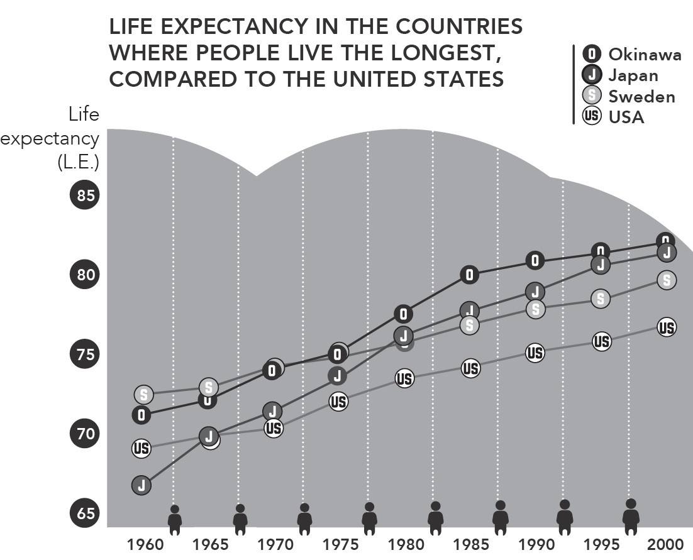

THE IKIGAI DIET
What the world’s longest-living
people eat and drink
ACCORDING TO THE World Health Organization, Japan has the highest life expectancy in the world: 85 years for men and 87.3 years for women. Moreover, it has the highest ratio of centenarians in the world: more than 520 for every million people (as of September 2016).

Source: World Health Organization, 1966; Japanese Ministry of Health, Labor and Welfare, 2004; U.S. Department of Health and Human Services/CDC, 2005
The above graphic, which compares life expectancy in Japan, its province Okinawa, Sweden, and the United States, shows that, while life expectancy in
Japan is high overall, Okinawa exceeds the national average.
Okinawa is one of the areas in Japan that were most affected by World War II.
As a result not only of conflicts on the battlefield but also of hunger and a lack of
resources once the war ended, the average life expectancy was not very high
during the 1940s and 1950s. As Okinawans recovered from the destruction,
however, they came to be some of the country’s longest-living citizens.
What secrets to long life do the Japanese hold? What is it about Okinawa that What secrets to long life do the Japanese hold? What is it about Okinawa that makes it the best of the best in terms of life expectancy?
Experts point out that, for one thing, Okinawa is the only province in Japan without trains. Its residents have to walk or cycle when not driving. It is also the
only province that has managed to follow the Japanese government’s
recommendation of eating less than ten grams of salt per day.
Okinawa’s miracle diet
The mortality rate from cardiovascular disease in Okinawa is the lowest in Japan,
and diet almost certainly has a lot to do with this. It is no coincidence that the
“Okinawa Diet” is so often discussed around the world at panels on nutrition.
The most concrete and widely cited data on diet in Okinawa come from
studies by Makoto Suzuki, a cardiologist at the University of the Ryukyus, who
has published more than seven hundred scientific articles on nutrition and aging
in Okinawa since 1970.
Bradley J. Willcox and D. Craig Willcox joined Makoto Suzuki’s research team and published a book considered the bible on the subject, The Okinawa
Program 1 . They reached the following conclusions:
Locals eat a wide variety of foods, especially vegetables. Variety seems to be key. A study of Okinawa’s centenarians showed that they ate 206 different foods, including spices, on a regular basis. They ate an average of eighteen different foods each day, a striking contrast to the nutritional poverty of our fast-food culture.
They eat at least five servings of fruits and vegetables every day. At least seven types of fruits and vegetables are consumed by Okinawans on a daily basis. The easiest way to check if there is enough variety on your table is to make sure you’re “eating the rainbow.” A table featuring red peppers,
carrots, spinach, cauliflower, and eggplant, for example, offers great color and variety. Vegetables, potatoes, legumes, and soy products such as tofu are the staples of an Okinawan’s diet. More than 30 percent of their daily calories comes from vegetables.
Grains are the foundation of their diet. Japanese people eat white rice every day, sometimes adding noodles. Rice is the primary food in Okinawa, as well.
They rarely eat sugar, and if they do, it’s cane sugar. We drove through several sugarcane fields every morning on our way to Ogimi, and even drank a glass of cane juice at Nakijin Castle. Beside the stall selling the juice was a sign describing the anticarcinogenic benefits of sugarcane.
In addition to these basic dietary principles, Okinawans eat fish an average of three times per week; unlike in other parts of Japan, the most frequently
consumed meat is pork, though locals eat it only once or twice per week.
Along these lines, Makoto Suzuki’s studies indicate the following:
Okinawans consume, in general, one-third as much sugar as the rest of
Japan’s population, which means that sweets and chocolate are much less a part of their diet.
They also eat practically half as much salt as the rest of Japan: 7 grams per day, compared to an average of 12.
They consume fewer calories: an average of 1,785 per day, compared to
2,068 in the rest of Japan. In fact, low caloric intake is common among the five Blue Zones.
Hara hachi bu
This brings us back to the 80 percent rule we mentioned in the first chapter, a
concept known in Japanese as hara hachi bu. It’s easy to do: When you notice
you’re almost full but could have a little more . . . just stop eating!
One easy way to start applying the concept of hara hachi bu is to skip dessert.
Or to reduce portion size. The idea is to still be a little bit hungry when you finish.
This is why portion size tends to be much smaller in Japan than in the West.
Food isn’t served as appetizers, main courses, and dessert. Instead, it’s much more
common to see everything presented at once on small plates: one with rice,
another with vegetables, a bowl of miso soup, and something to snack on. Serving
food on many small plates makes it easier to avoid eating too much, and
facilitates the varied diet discussed at the beginning of this chapter.
Hara hachi bu is an ancient practice. The twelfth-century book on Zen Buddhism Zazen Youjinki recommends eating two-thirds as much as you might
want to. Eating less than one might want is common among all Buddhist temples in the East. Perhaps Buddhism recognized the benefits of limiting caloric intake more than nine centuries ago.
So, eat less to live longer?
Few would challenge this idea. Without taking it to the extreme of malnutrition,
of course, eating fewer calories than our bodies ask for seems to increase
longevity. The key to staying healthy while consuming fewer calories is eating
foods with a high nutritional value (especially “superfoods”) and avoiding those
that add to our overall caloric intake but offer little to no nutritional value.
The calorie restriction we’ve been discussing is one of the most effective ways to add years to your life. If the body regularly consumes enough, or too many,
calories, it gets lethargic and starts to wear down, expending significant energy on
digestion alone.
Another benefit of calorie restriction is that it reduces levels of IGF-1
(insulin-like growth factor 1) in the body. IGF-1 is a protein that plays a
significant role in the aging process; it seems that one of the reasons humans and
animals age is an excess of this protein in their blood.2
Whether calorie restriction will extend lifespan in humans is not yet known, but data increasingly indicate that moderate calorie restriction with adequate
nutrition has a powerful protective effect against obesity, type 2 diabetes,
inflammation, hypertension, and cardiovascular disease and reduces metabolic
risk factors associated with cancer.3
An alternative to following the 80 percent rule on a daily basis is to fast for one or two days each week. The 5:2 (or fasting) diet recommends two days of
fasting (consuming fewer than five hundred calories) every week and eating
normally on the other five days.
Among its many benefits, fasting helps cleanse the digestive system and allows it to rest.
15 natural antioxidants found in the Okinawan diet
Antioxidants are molecules that slow the oxidation process in cells, neutralizing
the free radicals that cause damage and accelerate aging. The antioxidant power
of green tea, for example, is well known, and will be discussed later at greater
length.
length.
Because they are rich in antioxidants and are eaten nearly every day in the region, these fifteen foods are considered keys to Okinawan vitality:
Tofu
Miso
Tuna
Carrots
Goya (bitter melon)
Kombu (sea kelp)
Cabbage
Nori (seaweed)
Onion
Soy sprouts
Hechima (cucumber-like gourd)
Soybeans (boiled or raw)
Sweet potato
Peppers
Sanpin-cha (jasmine tea)
Sanpin-cha: The reigning infusion in Okinawa
Okinawans drink more Sanpin-cha—a mix of green tea and jasmine flowers—
than any other kind of tea. The closest approximation in the West would be the
jasmine tea that usually comes from China. A 1988 study conducted by Hiroko
Sho at the Okinawa Institute of Science and Technology indicates that jasmine
tea reduces blood cholesterol levels.4
Sanpin-cha can be found in many different forms in Okinawa, and is even available in vending machines. In addition to all the antioxidant benefits of green
tea, it boasts the benefits of jasmine, which include:
Reducing the risk of heart attack
Strengthening the immune system
Helping relieve stress
Lowering cholesterol
Okinawans drink an average of three cups of Sanpin-cha every day.
Okinawans drink an average of three cups of Sanpin-cha every day.
It might be hard to find exactly the same blend in the West, but we can drink jasmine tea, or even a high-quality green tea, instead.
The secrets of green tea
Green tea has been credited for centuries with significant medicinal properties.
Recent studies have confirmed its many benefits, and have attested to the
importance of this ancient plant in the longevity of those who drink it often.
Originally from China, where it has been consumed for millennia, green tea didn’t make its way to the rest of the world until just a few centuries ago. Unlike
other teas, and as a result of being air-dried without fermentation, it retains its
active elements even after being dried and crumbled. It offers meaningful health
benefits such as:
Controlling cholesterol
Lowering blood sugar levels
Improving circulation
Protection against the flu (vitamin C)
Promoting bone health (fluoride)
Protection against certain bacterial infections
Protection against UV damage
Cleansing and diuretic effects
White tea, with its high concentration of polyphenols, may be even more effective against aging. In fact, it is considered to be the natural product with the
greatest antioxidant power in the world—to the extent that one cup of white tea
might pack the same punch as about a dozen glasses of orange juice.
In summary: Drinking green or white tea every day can help us reduce the free radicals in our bodies, keeping us young longer.
The powerful shikuwasa
Shikuwasa is the citrus fruit par excellence of Okinawa, and Ogimi is its largest
producer in all of Japan.
The fruit is extremely acidic: It is impossible to drink shikuwasa juice without diluting it first with water. Its taste is somewhere between that of a lime and a
mandarin orange, to which it bears a family resemblance.
Shikuwasas also contain high levels of nobiletin, a flavonoid rich in antioxidants.
All citrus fruits—grapefruits, oranges, lemons—are high in nobiletin, but Okinawa’s shikuwasas have forty times as much as oranges. Consuming nobiletin
has been proven to protect us from arteriosclerosis, cancer, type 2 diabetes, and
obesity in general.
Shikuwasas also contain vitamins C and B1, beta carotene, and minerals. They are used in many traditional dishes and to add flavor to food, and are squeezed to
make juice. While conducting research at the birthday parties of the town’s
“grandparents,” we were served shikuwasa cake.
The Antioxidant Canon, for Westerners
In 2010 the UK’s Daily Mirror published a list of foods recommended by experts to combat aging. Among these foods readily available in the West are:
Vegetables such as broccoli and chard, for their high concentration of water, minerals, and fiber
Oily fish such as salmon, mackerel, tuna, and sardines, for all the
antioxidants in their fat
Fruits such as citrus, strawberries, and apricots; they are an excellent source of vitamins and help eliminate toxins from the body
Berries such as blueberries and goji berries; they are rich in
phytochemical antioxidants
Dried fruits, which contain vitamins and antioxidants, and give you
energy
Grains such as oats and wheat, which give you energy and contain
minerals
Olive oil, for its antioxidant effects that show in your skin
Red wine, in moderation, for its antioxidant and vasodilatory properties
Foods that should be eliminated are refined sugar and grains, processed baked goods, and prepared foods, along with cow’s milk and all its
derivatives. Following this diet will help you feel younger and slow the derivatives. Following this diet will help you feel younger and slow the process of premature aging.